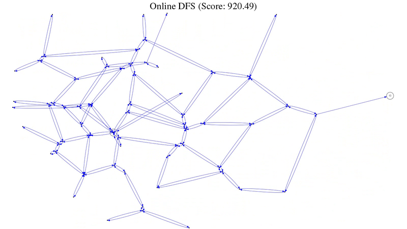
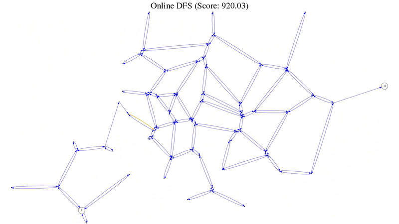

Online depth-first-search
See online depth-first search in action:
AIMA 4.12 plops an agent down (at an unknown location) into a world full of disjoint, convex polygons. The goal is to find the goal; after which, the agent is teleported to a random location. 1 point is deducted for every unit travelled; 1000 points rewarded every time the goal is reached.
Wash, rinse, repeat.
It turns out that a randomly walking agent doesn’t fare horribly on a world with 50 vertices over 1000 tics; such an agent can expect to score around 2500 points.
An online depth-first-search agent, on the other hand—which is basically stochastic but also exhaustive—will score about 3600 points. There are some subtleties of book-keeping involved in creating an online agent, however.
For one, we can’t merely pop a node off of the frontier when it turns out to be fruitless: we have to physically maneuver backwards. To that end, we’ll keep track of the unbacktracked nodes.
The horizon is a little weird, too: instead of being a universal stack which is pushed to and popped from, the online horizon is node-specific: every node will have a stack of untried nodes which will be popped during traversal.
The partially observable aspect leads to some interesting problems, too: one is the reconciliation of relative and absolute coördinate systems. When teleported to a new and unknown location, there is no choice but to designate that location origin; and construct an absolute map by the relative distances from that origin.
Things become problematic after teleporting to a subsequent unknown location: one assigns it origin and proceeds building a map relatively piecewise. At some point, though, chances are that the agent will encounter a previously encountered node (\(s\)) with some previously assigned absolute coördinate.
At that point, a delta (\(\delta\)) is computed between \(s\) and \(s'\); and \(\delta\) is propagated to the nodes calibrated by the other origin. In other words, one group of nodes calibrated by an origin is recalibrated by the other and thereby normalized.
This can be achieved by assigning a time stamp to every calculated coördinate, and recalibrating every old coördinate:
(hash-table-walk coordinates (lambda (state old-coordinate) (when (< (coordinate-time old-coordinate) time) (coordinate-time-set! old-coordinate time) (let ((old-point (coordinate-point old-coordinate))) (coordinate-point-set! old-coordinate (make-point (- (point-x old-point) delta-x) (- (point-y old-point) delta-y)))))))
It’s apparent when recalibration is required, since paths will cross (see figure 1); during animation, the recalibration is jarring (see figure 2).

Graph with divergent origins before recalibration (high-res)
{kind=link}

Graph with a normalized origin after recalibration (high-res)
{kind=link}
TODO
- I’d like to see some graphs to corroborate those numbers (distribution graphs: sorted, superimposed).
- Also superimposed: one run with score per minute, showing the lead-up time for depth-first vs. random walk.